TacCast
Learning Camera-Aligned Contact Representations
for Sim-to-Real Dexterous Grasping
KEY IDEA
Simulated touch.
Real-world grasping.
TacCast projects simulated full-hand contact into the camera view, learns to predict that contact from depth and joint histories, and conditions a recurrent grasping policy on the predicted map.
GENERALIZED REAL-WORLD GRASPING
Grasping
any objects.
TacCast generalizes across objects whenever their shapes and sizes are compatible with the hand. Most examples are shown at 2× speed; the continuous regrasp remains at its original speed.
DEPTH-NOISE PREDICTION
Learning the
real sensor gap.
The depth-noise generator converts clean simulated depth into D435-like observations for robust policy distillation, without running at deployment.
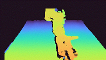
000000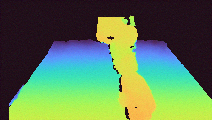
000090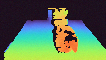
000120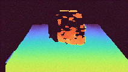
000150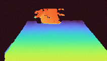
000240
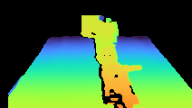
000000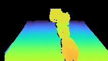
000090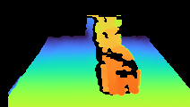
000120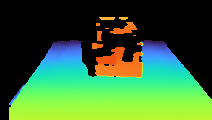
000150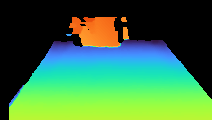
000240
CONTACT PREDICTION · MULTI-VIEW
Contact, from
every angle.
Each frame shows the predicted tactile contact pattern from a different hand pose and camera-aligned viewpoint.
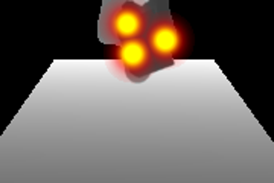
01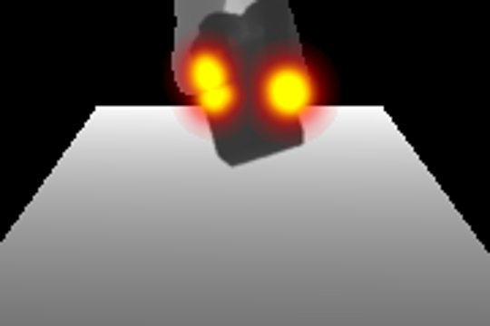
02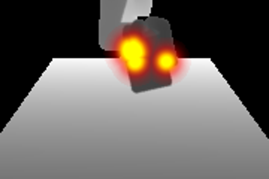
03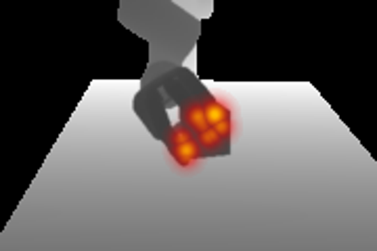
04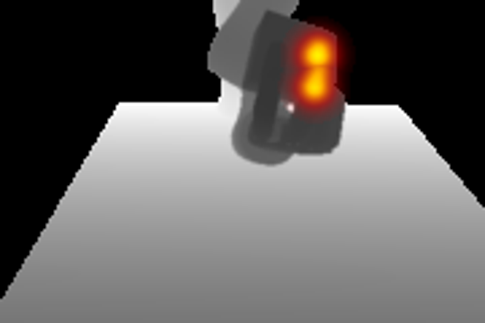
05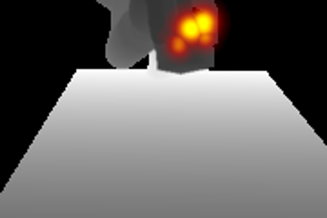
06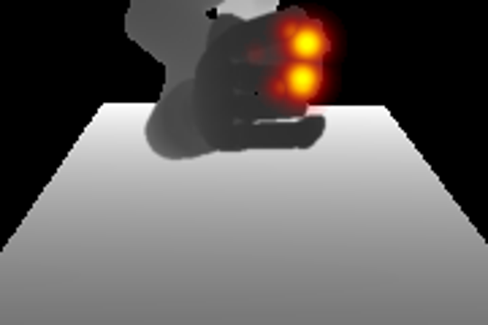
07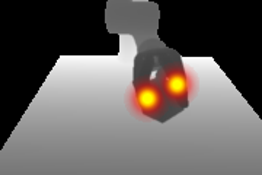
08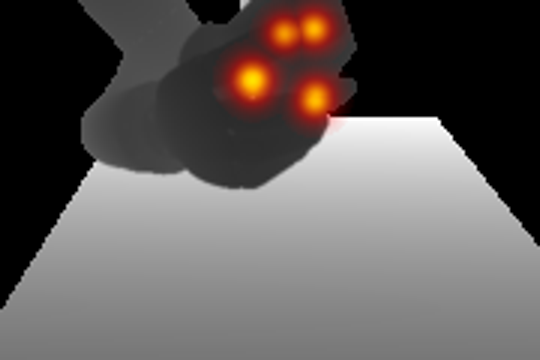
09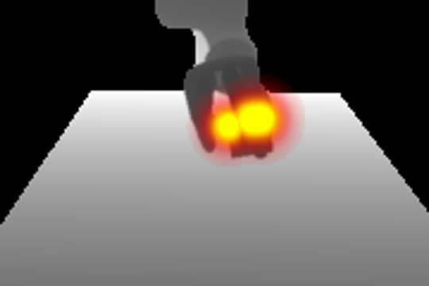
10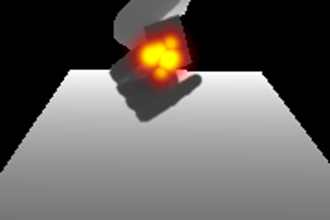
11- 12
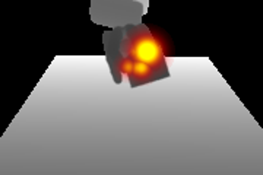
13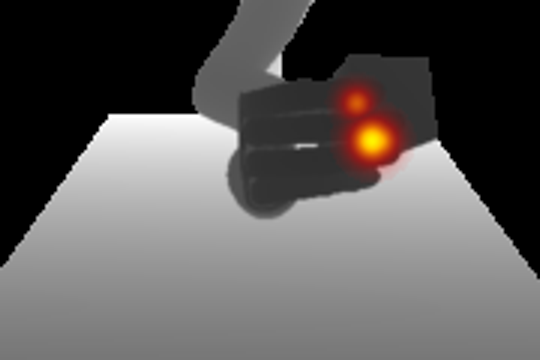
14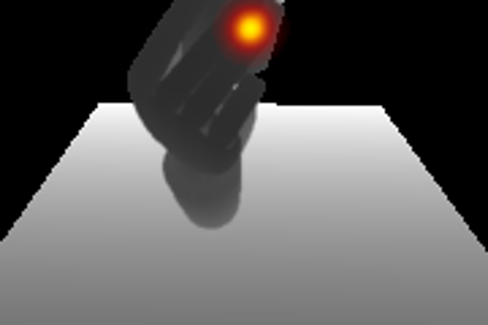
15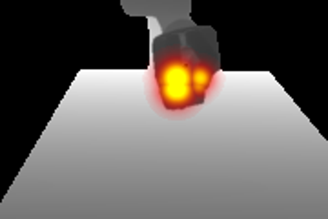
16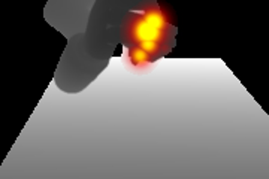
17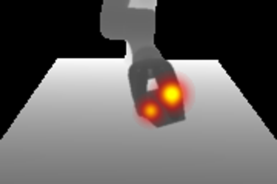
18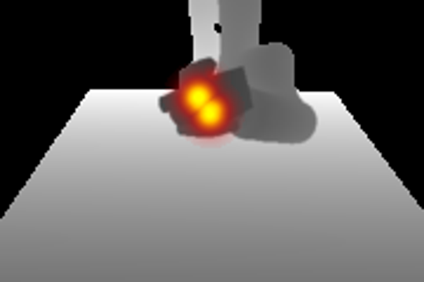
19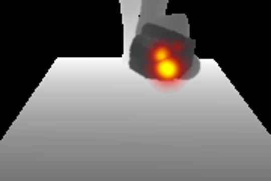
20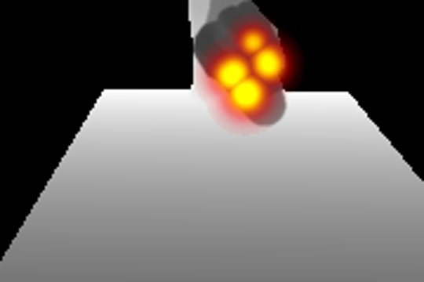
21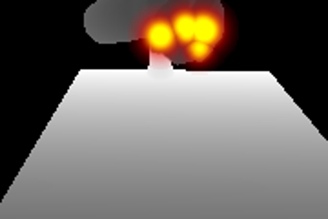
22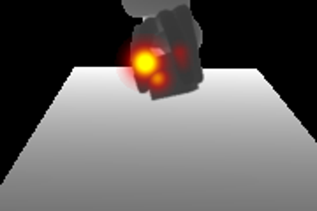
23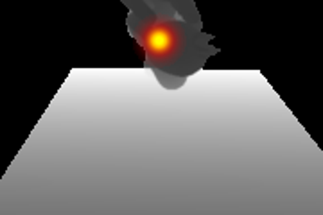
24
RESULTS AT A GLANCE
Contact prediction
and learned depth noise
improve the lift.
Across eight physical objects, the full system—predicted contact plus learned depth corruption—delivers the strongest stable-lifting success on both seen and unseen geometries.
Full TacCast leads every evaluated object while deploying with depth and proprioception only—no physical tactile sensing.